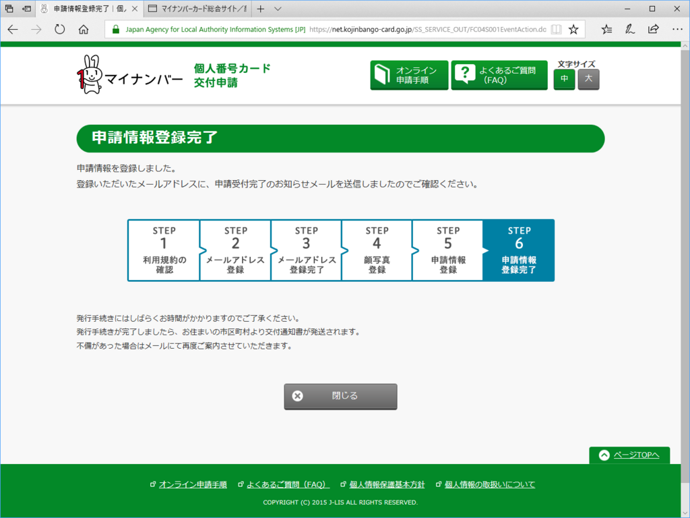

日記：マイナンバーカードの申請とサヨリの天ぷら
公開日：

確定申告でマイナンバーという存在を思い出したので、「そろそろ作っておくか」と思い立った。マイナンバーの通知カードだけでも事足りるのだけど、これはただの紙っぺらだし、出し入れを繰り返してくたくたになってきている。システムの不具合だか何だかいろいろごたごたしているっぽいのもあって発行は見送ってきたけど、それもいい加減なんとかなったろう。信仰上の理由で拒否しているわけでもないし、その気になったのならばさっさと動くに限る。
というわけで、父ちゃんを叩き起こしてスマホでテキトーに写真を撮ってもらい（証明写真？ めんどくさい）、オンラインで申請してみた。申請サイトは普通に使いやすくて、迷いようもない。ものの10分で手続きは終わった。到着が楽しみ――なことは別にないけど、どんなのがくるのかには興味がある。
夜は夕食を断って、外に飲みに出た。引きこもっているとなかなか気づかないけど、結構寒い。
行きつけの居酒屋はいつもより客が多かったが、カウンターには座れた。女将さんがコートをかけて、バイト君が注文を取ってくれる。今日はサヨリの天ぷらがおいしそうだったので、それを中心に脳内で献立を組み立てる。
その日は『資本論第一部草稿』を100ページほど読み進めた。
")
資本論第一部草稿 直接的生産過程の諸結果 (光文社古典新訳文庫)
- 作者: マルクス,森田成也
- 出版社/メーカー: 光文社
- 発売日: 2016/07/12
- メディア: 文庫
- この商品を含むブログ (1件) を見る
マルクス独特の言い回しを、古い記憶をたどりながら解読する。ところどころ「なにいってんだオメー」って感じだけど、ほんのり『資本論』第一部の内容を思い出すことができた。
正直なところ、これを読んで身になる人は何人いるんだろうか。そもそも『資本論』読んでないと意味ないと思うし、読んだからといって『草稿』にまで手を出さなければならないことはあるまい。きっと、たいして売れもしないだろう。でも、こういうのが日本語訳として、ちゃんとした（失礼！）解説付きで読めるのはスゴいことだと思う。
マルクスの用語は大変魅力的らしく、疎外や搾取といった言葉はフツーの人にもよく使われている。けれど、『資本論』をちゃんと踏まえて使っている人はそれほど多くないように見えるのは残念な気がする。労働価値説なんかをいまさら信じる意味はない（ので、『資本論』の論理はかなり崩壊している）けれど、読むたびになかなか楽しい発見がある。
あと、サヨリの天ぷら、美味しかった。お会計は4,050円。小銭入れを持っていくのを忘れてしまったのは大失敗で、帰りはコートのポケットがジャラジャラと賑やかだった。